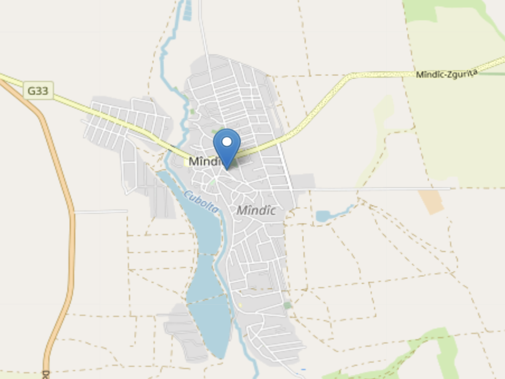

ULTIMELE ȘTIRI
vezi toate

Revenirea lui Dorin Recean în satul de baștină
Vila Ohanovicz în 2024. Oportunități
A șaptea ediție a festivalului “Portului Popular și al Pâinii”
Descoperă adevăratul tezaur tăinuit de acest colțișor de rai.
Trăiește o experiență de neuitat!
vezi toate
Revenirea lui Dorin Recean în satul de baștină
Vila Ohanovicz în 2024. Oportunități
A șaptea ediție a festivalului “Portului Popular și al Pâinii”
Satul Mîndîc este o localitate in Raionul
Drochia situata la latitudinea 48.1511 longitudinea 27.7927 si altitudinea de 154 metri fata de nivelul marii.
Aceasta localitate este in administrarea
or. Drochia. Conform recensamintului din anul 2004 populatia este de 3 402 locuitori.
Distanța directă pîna în or. Drochia este de 12 km. Distanța directă pîna în or. Chişinău este de 163 km.

View Full Map